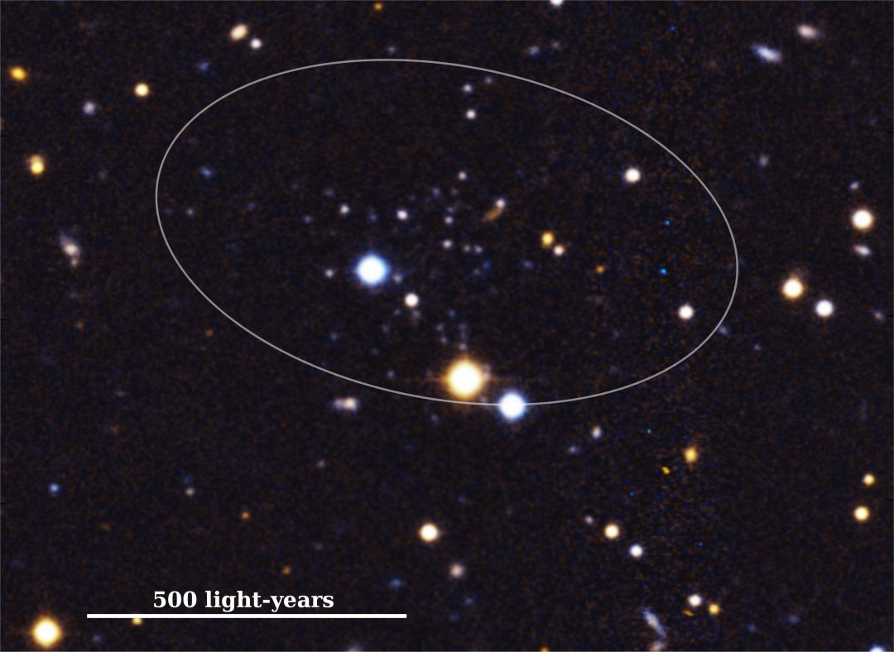

Descoberta menor galáxia conhecida, pequena demais até para ser verdade
Astrônomos descobriram uma galáxia tão pequena que é difícil imaginar como ela conseguiu reunir material suficiente para formar novas estrelas - e ela deve ter feito isto por muito tempo, ou já teria deixado de existir. Jose Marco Arias e colegas da Universidade de Michigan, nos EUA, descobriram a menor galáxia - e a de luz mais fraca - até hoje orbitando o sistema de Andrômeda, a galáxia vizinha mais próxima da Via Láctea. Batizada de Andrômeda XXXV, a galáxia anã está localizada a aproximadamente 3 milhões de anos-luz de distância, e tem cerca de um milionésimo do tamanho da Via Láctea. "É como ter um ser humano perfeitamente funcional, do tamanho de um grão de arroz," disse o professor Eric Bell. É por isso que ela está forçando os astrônomos a repensar como as galáxias evoluem em diferentes ambientes cósmicos e como elas sobrevivem a diferentes épocas do Universo. "Embora a descoberta traga mais perguntas do que respostas, é isso que acontece quando você investiga o Universo," disse Arias. "O Universo ainda abriga muitos mistérios, mas esta descoberta ajuda a corrigir o que sabemos e revela mais sobre o que não sabemos. Ainda temos muito a descobrir."